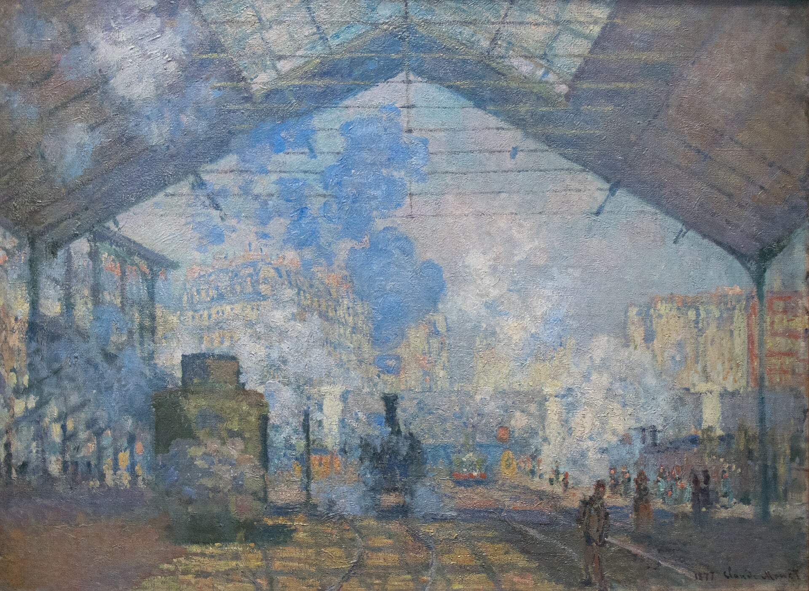

圣拉扎尔火车站 The Saint-Lazare Station
莫奈 · 1877年 · 巴黎奥赛博物馆
Claude Monet · 1877 · Musée d'Orsay, Paris
图片：Wikimedia Commons，公有领域 / Image: Wikimedia Commons, public domain

发现 · Discover
玻璃和铁 Glass and iron
头顶是玻璃和铁搭成的巨大车棚。在当时，这是最现代的建筑。
Overhead is a huge shed of glass and iron, the most modern kind of building at the time.
被困住的蒸汽 Trapped steam
火车头升起的蒸汽，被困在车棚里翻滚。
Steam rising from the locomotives is trapped inside the shed.
屋顶的光 Light from the roof
日光从屋顶大片的玻璃透进来，和蒸汽混在一起。莫奈最着迷的，正是这种人工和自然效果的组合。
Daylight pours through the great glazed sections of the roof and mixes with the steam. It was this combination of artificial and natural effects that fascinated Monet.
现代的巴黎 Modern Paris
印象派最前卫的一点，是画现代的工业化巴黎：铁桥、展览馆、火车站。
One of the most avant-garde things about the Impressionists was their choice of modern, industrial Paris as a subject: iron bridges, exhibition halls, train stations.
十二幅 Twelve paintings
1877年1月，他开始画这个车站，大约四个月就画了12幅。
In January 1877 he began painting this station, and completed twelve paintings in about four months.
车站里的车站 A station inside a station
今天，这幅画挂在奥赛博物馆，而奥赛本身就是一座改建的火车站。
Today the painting hangs in the Musée d'Orsay, which is itself a converted railway station.
曾经属于卡耶博特 Once Caillebotte's
在进入奥赛之前，这幅画曾经属于卡耶博特。
Before it came to the Musée d'Orsay, this painting belonged to Caillebotte.
故事 · The story
ACT I 第一幕 · 巴黎最繁忙的车站 The busiest station in Paris
1877年1月，莫奈开始画圣拉扎尔火车站，当时巴黎最大、最繁忙的车站。大约四个月里，他画了12幅。
In January 1877, Monet began painting the Gare Saint-Lazare, then the largest and busiest station in Paris. In about four months, he painted twelve views.
1877年 · 巴黎奥赛博物馆 / 1877 · Musée d'Orsay, Paris
ACT II 第二幕 · 1877年的画展 The 1877 exhibition
那年4月，他在第三届印象派画展上展出了其中好几幅。作家左拉称赞他画出了现代火车站的兴奋和活力。同一场画展上，还有卡耶博特的《巴黎街道，雨天》。
That April, he showed several of them at the third Impressionist exhibition. The writer Émile Zola praised him for capturing the excitement and energy of the modern station. At the same exhibition was Caillebotte's Paris Street; Rainy Day.
1877年 · 巴黎奥赛博物馆 / 1877 · Musée d'Orsay, Paris
ACT III 第三幕 · 最后一次画城市 Farewell to the city
这组车站画开启了莫奈一生的做法：一次又一次画同一个主题，捕捉光线的变化。但这也是他最后一次画城市生活，从此以后，他几乎只画风景。
This group of station paintings began a lifelong habit for Monet: painting the same subject again and again to capture the changing light. But it was also his last attempt to paint city life. From then on, he devoted himself almost entirely to landscape.
1877年 · 巴黎奥赛博物馆 / 1877 · Musée d'Orsay, Paris
蒸汽、玻璃和光。 Steam, glass and light.
作品档案 · Artwork record
| 画家（生卒年） · Artist (dates) | 克劳德·莫奈（1840–1926） / Claude Monet (1840–1926) |
|---|---|
| 画名 · Title | 圣拉扎尔火车站 / The Saint-Lazare Station (La Gare Saint-Lazare) |
| 年份 · Date | 1877年 / 1877 |
| 材质 · Medium | 布面油画 / Oil on canvas |
| 尺寸 · Dimensions | 75.5 × 104 厘米 / 75.5 × 104 cm |
| 收藏地 · Collection | 巴黎奥赛博物馆 / Musée d'Orsay, Paris |
关于画家 · About the artist
克劳德·莫奈（1840–1926），法国印象派最重要的风景画家。他生于巴黎，在勒阿弗尔长大。普法战争期间（1870–71）曾移居伦敦。1883年起住在吉维尼，晚年专注于在不同光线下反复画同一主题，比如干草堆、鲁昂大教堂和他自己的花园。
Claude Monet (1840–1926) was the leading French Impressionist landscape painter. Born in Paris, he grew up in Le Havre and moved to London during the Franco-Prussian War (1870–71). From 1883 he lived in Giverny, where he painted series of a single subject under different light: haystacks, Rouen Cathedral and his own garden.